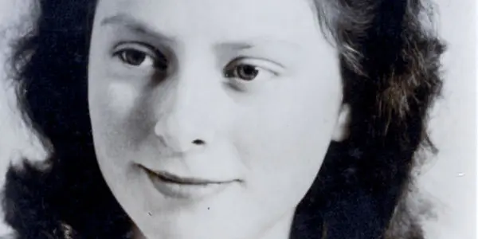

Howdy!
Dutch Resistance
During the Second World War, the Netherlands was occupied pretty early on. Some people were too scared to resist, some even helped the Nazis. But a group of people formed a resistance. They sabotaged, assassinated Nazis and Dutch traitors, and spread illegal newspapers. One of them was Freddie Oversteegen, with her sister Truus.

Source
Freddie Oversteegen
AAAAAUUUUUGHHHHHHHHHHHH